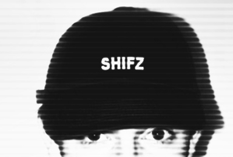

|  "Manch zufälligem Betrachter tritt der Angstschweiss auf die Stirn" (Tools+Toys 3/2000) |
.......................... SHIFZ
Eine wesentliche Bestrebung von SHIFZ ist es, die Verbundenheit von moderner Wissenschaft und Kunst im Allgemeinen aufzuzeigen und die Auswirkungen bestimmter Technologien auf das künstlerische Schaffen im 21. Jahrhundert zu demonstrieren. Die elektronischen Medien dienen hier als Mittel des künstlerischen Ausdrucks, werden aber auch vielfältigen traditionellen Formen des künstlerischen Wirkens gegenübergestellt. Ein wichtiger Inhalt von SHIFZ ist die Kommunikation und Kooperation mit lokalen/internationalen Künstlern, die im Bereich der Wahrnehmung tätig sind, bzw. eine kritische/kreative Auseinandersetzung mit den Entwicklungen des Informationszeitalters führen.
|